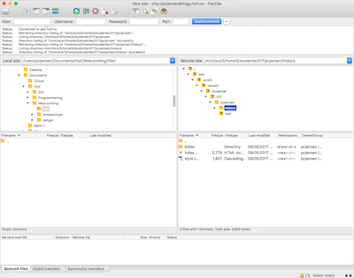

FTP
 FTP står for «File Transfer Protocol», eller filoverføringsprotokoll på norsk. Som det ligger i navnet handler det om overføring av filer. FTP fungerer som en slags bro fra din datamaskin til en webserver, slik at en filoverføring kan finne sted. Overføringen skjer mellom din datamaskin via en ftp-klient, og webserveren (ftp-server). Du kan både laste ned og legge til filer på serveren. Ftp-klienten er programmet som oppretter kontakt med webserveren. Det finnes mange slike klienter på markedet, men kanskje mest kjent er FileZilla. Konseptet kjenner vi igjen fra skylagringstjenester som Dropbox og Google Drive, der man kobler seg til en ekstern lagringskilde. Protokollen TCP/IP brukes ved overføring, som er en protokollen for å sende data over nettverk. Du kan lese mer om TCP/IP i artikkelen om domener og URL her.
Skjermbilde av FileZilla. Her er jeg tilkoblet skolens webserver hvor man kan se filene til min nettside. Ved endring av nettsiden kan jeg her dra de oppdaterte filene inn i mappen «htdocs», og overskrive de nåværende filene. Les mer om webservere her.